`summarise()` has grouped output by 'dataset'. You can override using the
`.groups` argument.
# Create a double y-axis plottemperature_plot <-ggplot() +geom_line(data = anom, aes(x = year, y = avg_anomaly), color ="purple") +geom_point(data = anom, aes(x = year, y = avg_anomaly), color ="purple") +labs(x ="Year",y ="Temperature\nanomaly (°C)" ) +geom_hline(yintercept =0, linetype ="dashed", color ="black") # Add dashed horizontal line# Second plot: Number of recordsrecords_plot <-ggplot() +# "Field observation" = "#0751f1", "Herbarium" = "#582800"geom_col(data = count_data %>%filter(dataset =="npn"), aes(x = year, y = count), fill ="#0751f1", alpha =0.5) +geom_col(data = count_data %>%filter(dataset =="herb"), aes(x = year, y = count), fill ="#582800", alpha =0.5) +labs(x ="Year",y ="Number of\nrecords" )# Combine the two plots with a shared x-axis using patchworkdouble_y_plot <- temperature_plot / records_plot# Display the plotprint(double_y_plot)
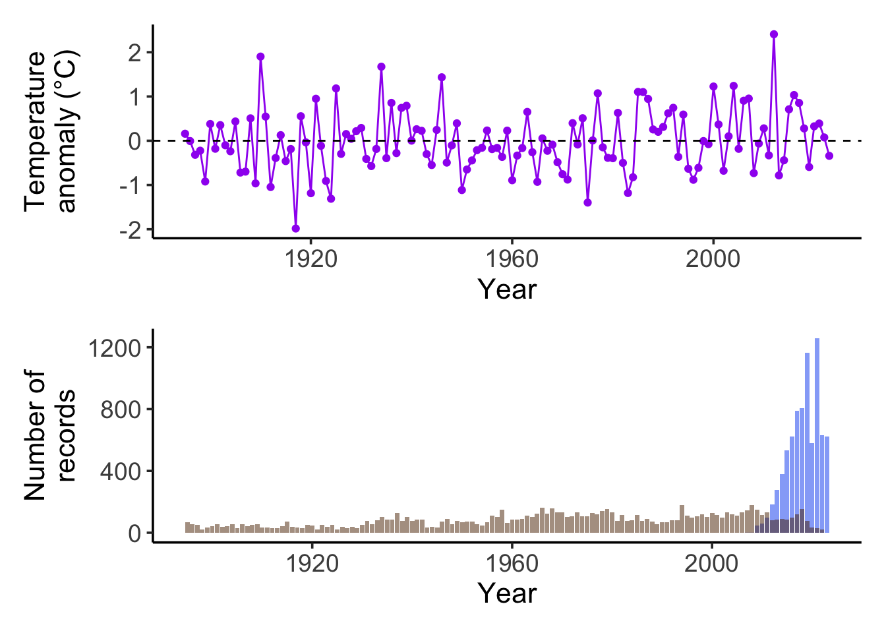
Figure 1b
Get latidude temperature normality data
prism_raster <-raster(.path$prism_norm)# Extract temperature values by latitudelat_values <-seq(24, 50, by =0.5) # Adjust range as neededlong_values <-rep(-98, length(lat_values)) # Use a central longitudetemp_by_lat <- raster::extract(prism_raster, cbind(long_values, lat_values))# Create a data frame with latitude and temperaturenorm <-data.frame(latitude = lat_values, temperature = temp_by_lat)
# Optional: Create a plot of temperature by latitudenormality_plot <-ggplot(norm, aes(x = temperature, y = latitude)) +geom_line(color ="red") +theme(axis.text.y =element_blank(),axis.title.y =element_blank(),axis.ticks.y =element_blank(),plot.margin =margin(t =20, r =5, b =40, l =0, unit ="pt") ) +labs(x ="Temperature normality (°C)" ) +scale_y_continuous(limits =c(24, 50))print(normality_plot)
Warning: Removed 7 rows containing missing values or values outside the scale range
(`geom_line()`).
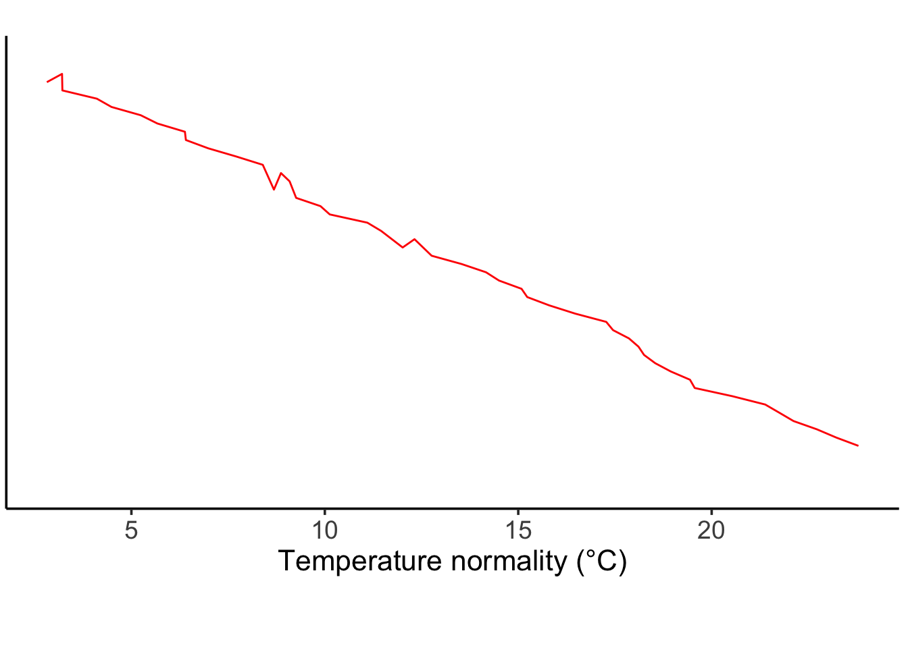
# Load US states as sf objectus_states <-st_as_sf(maps::map("state", plot =FALSE, fill =TRUE))map_plot <-ggplot() +geom_sf(data = us_states, fill =NA, color ="grey") +geom_point(data = temperature_data, aes(x = lon, y = lat, color = dataset), alpha =0.5, size =0.5) +scale_color_manual(values =c("herb"="#582800", "npn"="#0751f1"),labels =c("herb"="Herbarium", "npn"="Field observation") ) +xlim(-127, -66) +ylim(24, 50) +theme(legend.position =c(0.15, 0.15) ) +labs(color ="Data source",x ="Longitude",y ="Latitude",title =" " )
Warning: A numeric `legend.position` argument in `theme()` was deprecated in ggplot2
3.5.0.
ℹ Please use the `legend.position.inside` argument of `theme()` instead.
print(map_plot)
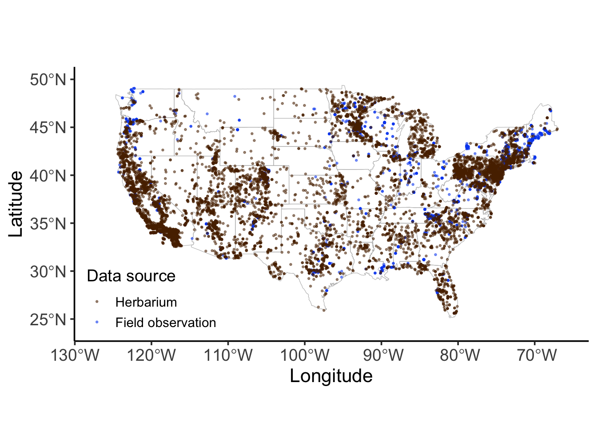
Figure 1c
black <-data.frame(x =c(0, 1), y =c(1, 0), color ="black")purple_center <-data.frame(x =seq(0.2, 0.8, by =0.2), y =1-seq(0.2, 0.8, by =0.2))
tem_sen <-ggplot(data = black) +# geom_point(aes(x = x, y = y)) +geom_line(mapping =aes(x = x, y = y), color ="purple", size =2) +theme(axis.text.x =element_blank(),axis.text.y =element_blank(),axis.ticks =element_blank(),axis.line =element_line(color ="black") ) +xlim(-0.3, 1) +ylim(-0.1, 1) +labs(# x = expression("Temperature anomaly" ~ t[anom]),# y = expression("Flowering day anomaly" ~ d[anom]),x ="Temperature anomaly",y ="Flowering day anomaly",title =" " ) +annotate("text", x =-0.12, y =0.1, label ="Early\nflowering", size =4, hjust =0.7) +annotate("text", x =-0.12, y =0.92, label ="Late\nflowering", size =4, hjust =0.7) +annotate("text", x =0.1, y =-0.1, label ="Cold year", size =4, vjust =0.2) +annotate("text", x =0.9, y =-0.1, label ="Hot year", size =4, vjust =0.2) +# add a horizontal and vertical dash line cross 0,0 and label that they represent 0,0geom_point(aes(x =0.5, y =0.5), color ="purple", size =4) +geom_hline(yintercept =0.5, linetype ="dashed") +geom_vline(xintercept =0.5, linetype ="dashed") +annotate("text", x =0.65, y =0.6, label ="(0, 0)", size =4)
Warning: Using `size` aesthetic for lines was deprecated in ggplot2 3.4.0.
ℹ Please use `linewidth` instead.
print(tem_sen)
Warning in geom_point(aes(x = 0.5, y = 0.5), color = "purple", size = 4): All aesthetics have length 1, but the data has 2 rows.
ℹ Please consider using `annotate()` or provide this layer with data containing
a single row.
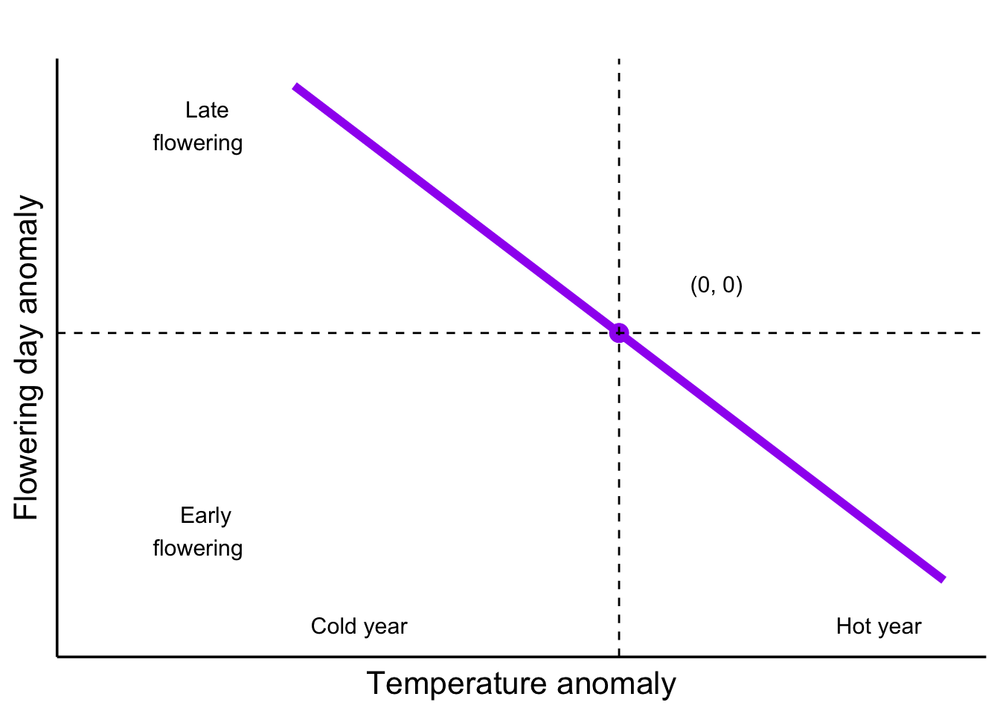
Figure 1d
spa_sen <-ggplot(data = black) +# geom_point(aes(x = x, y = y)) +geom_line(mapping =aes(x = x, y = y), color ="red") +theme(axis.text.x =element_blank(),axis.text.y =element_blank(),axis.ticks =element_blank(),axis.line =element_line(color ="black") ) +xlim(-0.3, 1) +ylim(-0.1, 1) +labs(# x = expression("Temperature normality" ~ t[norm]),# y = expression("Flowering day normality" ~ d[norm]),x ="Temperature normality",y ="Flowering day normality",title =" " ) +annotate("text", x =-0.12, y =0.1, label ="Early\nflowering", size =4, hjust =0.7) +annotate("text", x =-0.12, y =0.92, label ="Late\nflowering", size =4, hjust =0.7) +annotate("text", x =0.1, y =-0.1, label ="Cold place", size =4, vjust =0.2) +annotate("text", x =0.85, y =-0.1, label ="Hot place", size =4, vjust =0.2)print(spa_sen)
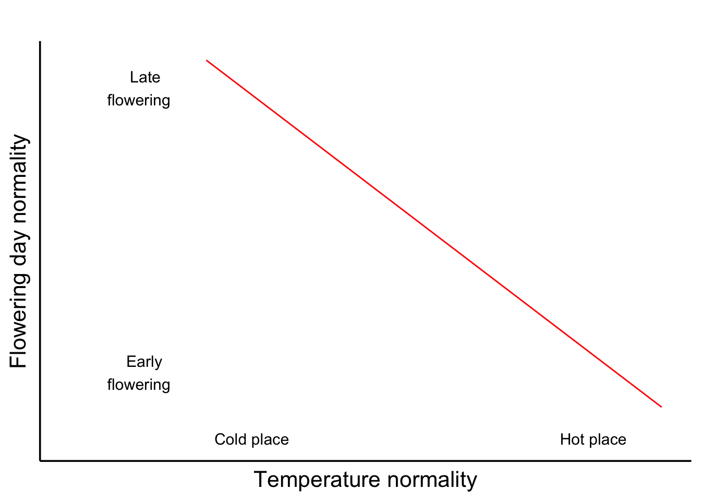
Figure 1e
## Function to calculate line segmentscalculate_segments <-function(center, slope, length) { start_x <- center$x - length /2*cos(atan(slope)) start_y <- center$y - length /2*sin(atan(slope)) end_x <- center$x + length /2*cos(atan(slope)) end_y <- center$y + length /2*sin(atan(slope))tibble(start_x = start_x, start_y = start_y, end_x = end_x, end_y = end_y)}# Apply the function to all centerssegments_1 <-bind_rows(lapply(1:nrow(purple_center), function(i) {calculate_segments(purple_center[i, ], -1.5, 0.18)}))segments_2 <-bind_rows(lapply(1:nrow(purple_center), function(i) {calculate_segments(purple_center[i, ], -1, 0.18)}))segments_3 <-bind_rows(lapply(1:nrow(purple_center), function(i) {calculate_segments(purple_center[i, ], -0.5, 0.18)}))
plot
# Plotspa_tem <-ggplot(mapping =aes(x = x, y = y)) +geom_line(data = black, aes(group =1), color ="red") +geom_point(data = purple_center, color ="purple", size =3) +geom_segment(data = segments_2, aes(x = start_x, y = start_y, xend = end_x, yend = end_y), color ="purple", size =2) +# geom_hline(yintercept = 0.4, linetype = "dashed") +# geom_vline(xintercept = 0.6, linetype = "dashed") +labs(# x = expression(t[observe]),# y = expression(d[observe]),x ="Temperature observed",y ="Flowering day observed",title =" " ) +theme(axis.text.x =element_blank(),axis.text.y =element_blank(),axis.ticks =element_blank(),axis.line =element_line(color ="black") )print(spa_tem)
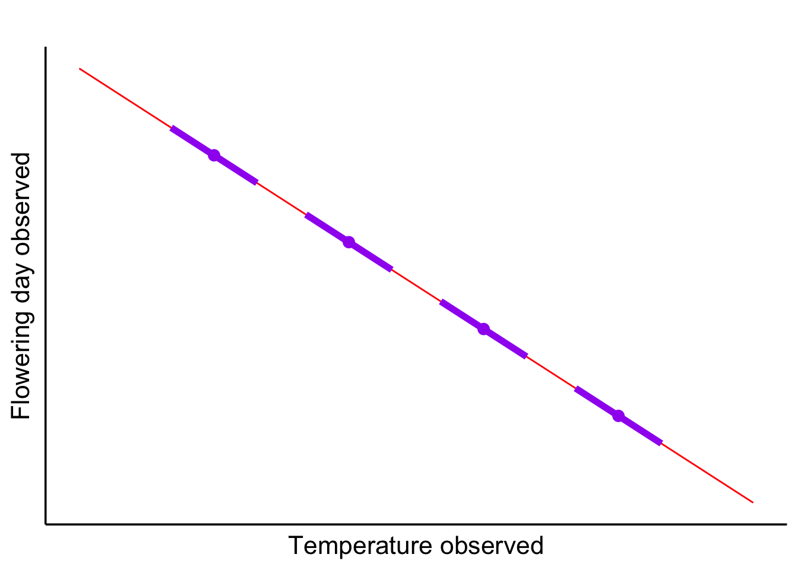
Combined
layout <-c( patchwork::area(t =1, l =1, b =1, r =12), patchwork::area(t =2, l =1, b =2, r =12), patchwork::area(t =3, l =1, b =6, r =10), patchwork::area(t =3, l =11, b =6, r =12), patchwork::area(t =1, l =13, b =2, r =16), patchwork::area(t =3, l =13, b =4, r =16), patchwork::area(t =5, l =13, b =6, r =16))plot(layout)
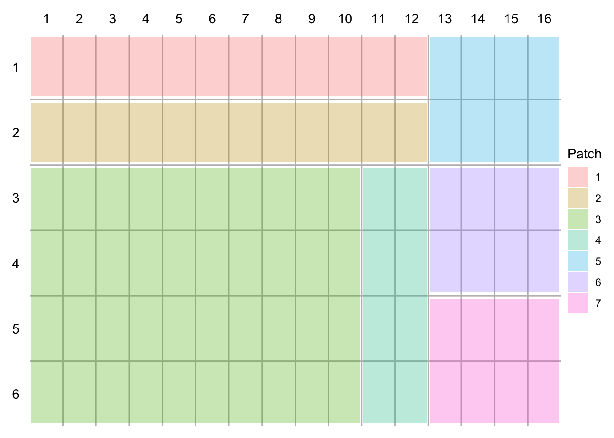
# Adjust the margins and layoutcombined_plot <- double_y_plot + map_plot + normality_plot + tem_sen + spa_sen + spa_tem +plot_layout(design = layout) +plot_annotation(tag_levels ="a")# Print the combined plotprint(combined_plot)
Warning: Removed 7 rows containing missing values or values outside the scale range
(`geom_line()`).
Warning in geom_point(aes(x = 0.5, y = 0.5), color = "purple", size = 4): All aesthetics have length 1, but the data has 2 rows.
ℹ Please consider using `annotate()` or provide this layer with data containing
a single row.
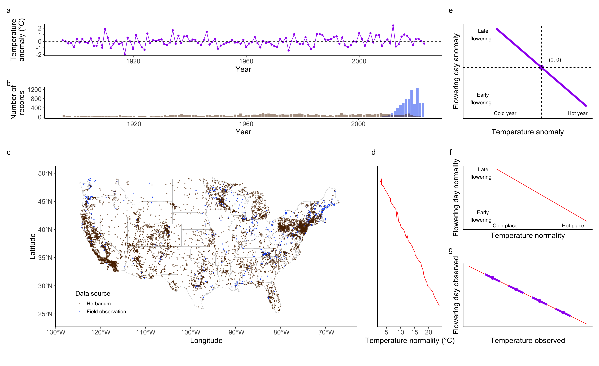
Figure 2: the by group result from the two datasets
Prepare data
by_species <-read_csv(.path$byspecies_summary)
Rows: 106 Columns: 10
── Column specification ────────────────────────────────────────────────────────
Delimiter: ","
chr (2): species, dataset
dbl (8): anom_estimate, anom_conf_low, anom_conf_high, norm_estimate, norm_c...
ℹ Use `spec()` to retrieve the full column specification for this data.
ℹ Specify the column types or set `show_col_types = FALSE` to quiet this message.
taxa_info <-read_csv(.path$taxa_info)
Rows: 82 Columns: 4
── Column specification ────────────────────────────────────────────────────────
Delimiter: ","
chr (4): species, genus, family, taxa
ℹ Use `spec()` to retrieve the full column specification for this data.
ℹ Specify the column types or set `show_col_types = FALSE` to quiet this message.
layout <-c( patchwork::area(t =1, l =1, b =1, r =4), patchwork::area(t =2, l =1, b =2, r =3), patchwork::area(t =2, l =4, b =2, r =4))plot(layout)
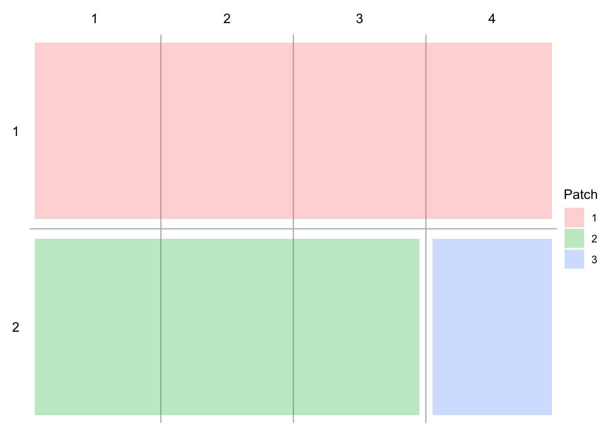
# Adjust the margins and layoutFigure_2 <- herb_byspecies_plot + npn_byspecies_plot + byspecies_scatter +plot_layout(design = layout, guides ="collect") +# Example: change heights as neededplot_annotation(tag_levels ="a") &theme(legend.position ="top")# Print the combined plotprint(Figure_2)
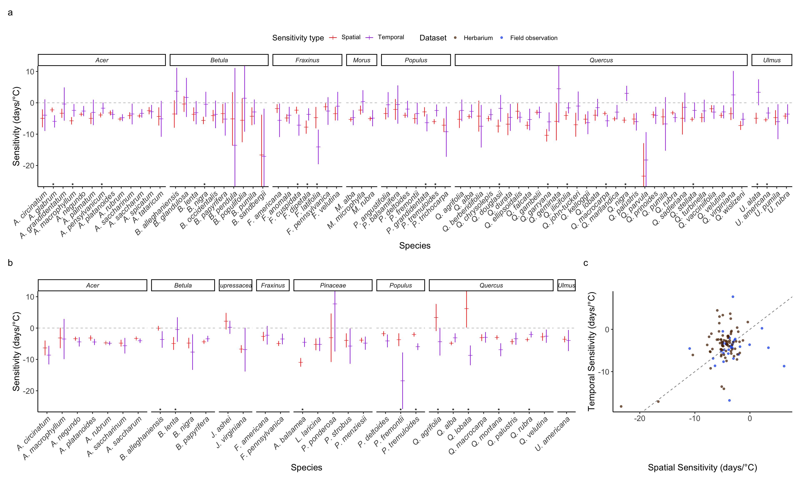
Figure 3 compare two dataset sensitivity
by_species_wtaxa_combined_dataset <- by_species_wtaxa_combined %>%# Arrange alphabetically by taxa and speciesarrange(taxa, species) %>%# Abbreviate genus names (e.g., Acer → A.)mutate(species_name = forcats::fct_reorder(simple_name, desc(simple_name))) %>%# Fix spelling and filter species present in both datasetsgroup_by(species) %>%filter(all(c("herb", "npn") %in% dataset)) %>%# Group by species and sensitivity typegroup_by(species, sensitivity_type) %>%# Calculate overlap indicatormutate(equal =as.integer(max(conf_low_combined) <min(conf_high_combined)) )
by_species_wtaxa_combined_dataset %>%ggplot(aes(x = estimate_combined, y = species_name, color = dataset)) +scale_color_manual(values =c("npn"="#0751f1", "herb"="#582800"),labels =c("npn"="Field observation", "herb"="Herbarium") ) +geom_point(shape =3, size =2, position =position_dodge(width =0.5)) +# Adjust width as neededcoord_cartesian(xlim =c(-20, 10)) +# This will clip the error bars instead of removing themgeom_errorbar(aes(xmin = conf_low_combined, xmax = conf_high_combined), width =0, position =position_dodge(width =0.5)) +geom_vline(xintercept =0, linetype ="dashed") +geom_text(aes(x =-21, label =ifelse(equal ==0, "*", "")), vjust =0.75, color ="black") +labs(title ="",x ="Sensitivity (days/°C)",y ="Species",color ="Dataset" ) +facet_grid(taxa ~ sensitivity_type, scales ="free_y", space ="free_y") +theme(axis.text.y =element_text(face ="italic"),legend.text =element_markdown() # Italicize legend text ) +# Apply themes for classic look, italics, and markdown legendtheme(axis.text.y =element_text(face ="italic"),legend.position ="top" )
tree$tip.label <- tree$tip.label %>%gsub("_", " ", .)diff_color <-data.frame(species = species_sensitivity_PMM$species,diff = species_sensitivity_PMM$mean)# Assuming `tree` is a phylogenetic tree object and `lam_bc_pmm` contains the lambda values for the leaves# You can use the `phytools` package to compute ancestral node values by averaging over descendant leaves.# Step 1: Create a named vector for the lambda values (`lam_bc_pmm`), with species names as nameslambda_tips <-setNames(diff_color$diff, tree$tip.label) # Assuming `lam_bc_pmm` contains species' lambda values# Step 2: Use `fastAnc` to calculate ancestral states (lambda values) for internal nodeslambda_nodes <-fastAnc(tree, diff_color$diff) # Computes the ancestral values by averaging the lambda values of descendants
Warning in fastAnc(tree, diff_color$diff): x should be a vector with names corresponding to the taxon labels of the tree.
Assuming x is in the order of tree$tip.label (this is seldom true).
# Step 3: Combine tip and node lambda values into one vector for plottinglambda_all <-c(lambda_tips, lambda_nodes)# Step 4: Create the ggtree plot and color the tips and nodes based on their lambda valuestree_plot <-ggtree(tree, aes(color = lambda_all)) +# Shrink branch lengths with xscalegeom_tree() +scale_color_gradient2(low ="blue", mid ="black", high ="red", midpoint =0,name ="Difference\n(Temporal - Spatial,\ndays/°C)" ) +# Darker color gradienttheme_tree() +theme(plot.margin =margin(t =5, r =0, b =30, l =0),legend.position =c(0.05, 0.95), # Position legend inside plot arealegend.justification =c(0, 1), # Align legend to top-leftlegend.direction ="horizontal", # Display legend verticallylegend.background =element_rect(fill ="white", color =NA), # Optional: add backgroundlegend.title =element_text(size =10), # Adjust title size if neededlegend.key =element_rect(color =NA), # Remove key borderslegend.margin =margin(0, 0, 0, 0) # Remove legend margins ) +guides(color =guide_colorbar(title.position ="top", title.hjust =0.5, label.position ="bottom"))print(tree_plot)
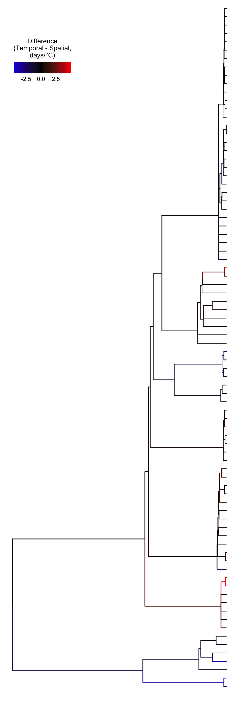
PMM
# Extract the order of tip labels as they are plottedtip_order <- tree_plot$data %>%filter(isTip) %>%arrange(y) %>%pull(label)# Use this order to reorder your species in the second figurespecies_sensitivity_PMM$species <-factor(species_sensitivity_PMM$species, levels = tip_order)sensitivity_plot <- species_sensitivity_PMM %>%ggplot(aes(x = mean, y = species, color = mean)) +geom_point(shape =20, size =2, position =position_dodge(width =0.5)) +geom_errorbar(aes(xmin =`2.5%`, xmax =`97.5%`), width =0.2) +# Removed redundant colorscale_color_gradient2(low ="blue", mid ="black", high ="red", midpoint =0,name ="Difference\n(Spatial - Temporal,\ndays/°C)" ) +geom_vline(xintercept =0, linetype ="dashed") +labs(title =NULL, # Clearer to use NULL for an empty titley =NULL, # Clearer to use NULL for an empty y-axis labelx ="Difference (Spatial - Temporal, days/°C)" ) +xlim(10, -10) +# Optional: adjust if needed# facet_grid(genus ~ ., scales = "free_y", space = "free_y") + # Optional facettheme_classic() +theme(legend.position ="none",axis.text.y =element_text(face ="italic"), # Ensure italics for species nameslegend.text =element_text() # Use element_text instead of element_markdown )
HMM
# Use this order to reorder your species in the second figurespecies_sensitivity_HMM$species <-factor(species_sensitivity_HMM$species, levels = tip_order)HMM_sensitivity_plot <- species_sensitivity_HMM %>%ggplot(aes(x = mean, y = species, color = mean)) +geom_point(shape =20, size =2, position =position_dodge(width =0.5), color ="black") +geom_errorbar(aes(xmin =`2.5%`, xmax =`97.5%`), width =0.2, color ="black") +# Removed redundant colorgeom_vline(xintercept =0, linetype ="dashed") +labs(title =NULL, # Clearer to use NULL for an empty titley =NULL, # Clearer to use NULL for an empty y-axis labelx ="Difference (Spatial - Temporal, days/°C)" ) +xlim(10, -10) +# Optional: adjust if needed# facet_grid(genus ~ ., scales = "free_y", space = "free_y") + # Optional facettheme_classic() +theme(legend.position ="none",axis.title.y =element_blank(), axis.text.y =element_blank(), axis.ticks.y =element_blank(),legend.text =element_text() # Use element_text instead of element_markdown )
Warning in fastAnc(tree, diff_color$diff): x should be a vector with names corresponding to the taxon labels of the tree.
Assuming x is in the order of tree$tip.label (this is seldom true).
Warning in fastAnc(tree, diff_color$diff): x should be a vector with names corresponding to the taxon labels of the tree.
Assuming x is in the order of tree$tip.label (this is seldom true).